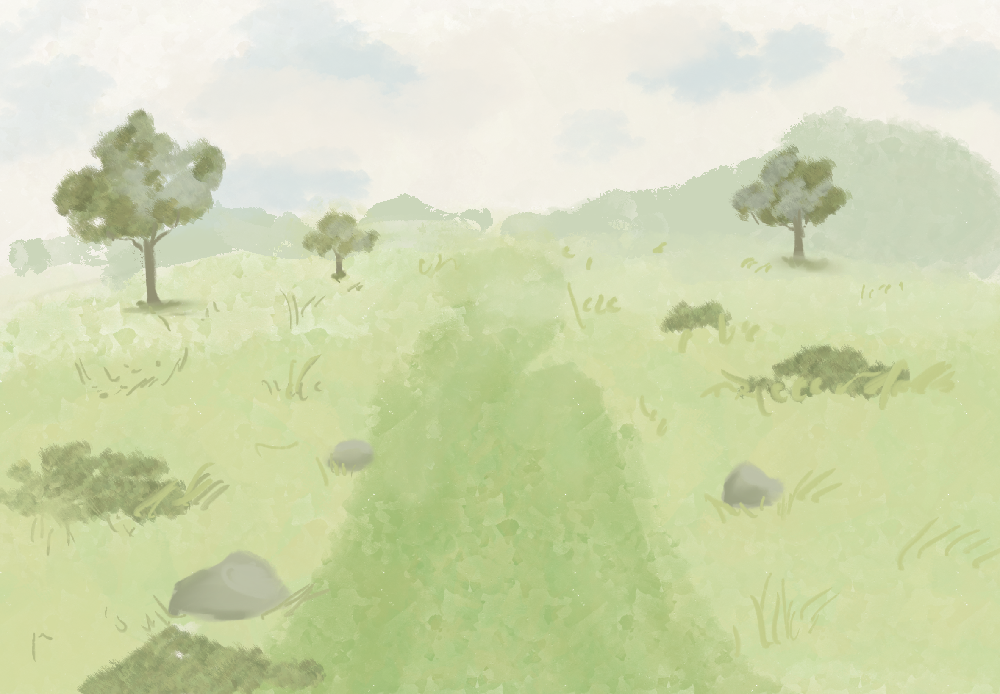
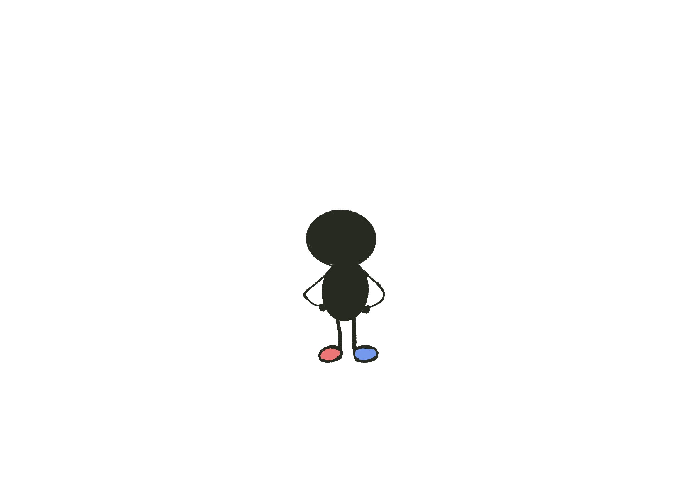
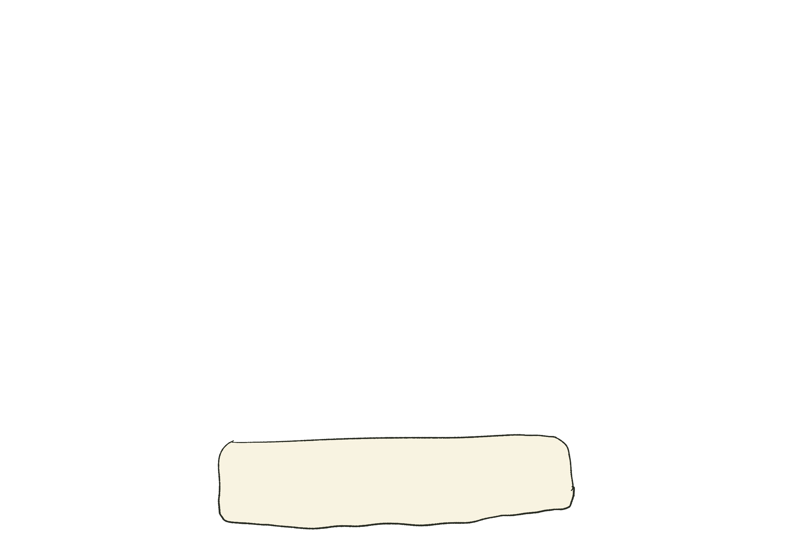
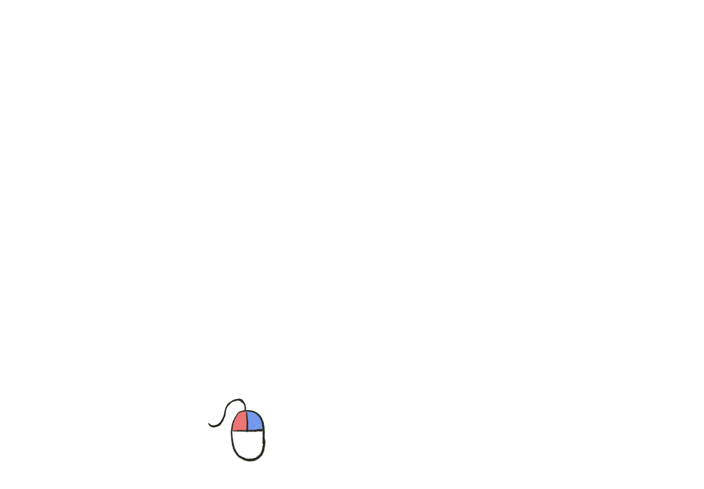

Just Walk




Alternate left and right clicks to walk.
Left click: left foot · Right click: right foot




Alternate left and right clicks to walk.
Left click: left foot · Right click: right foot